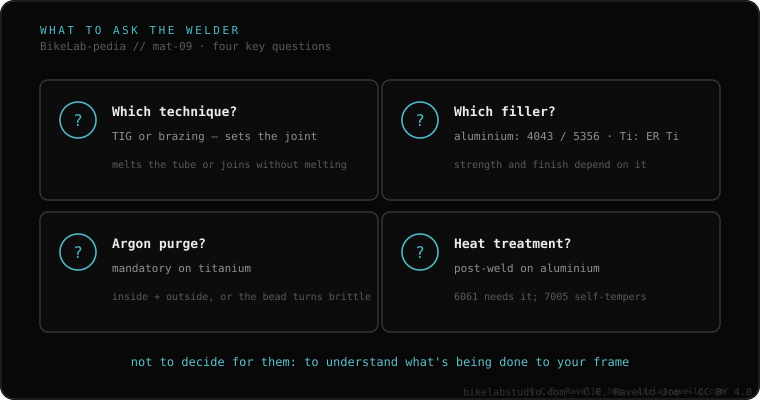

You don't need to know how to weld. You need four questions and to watch whether they answer without hesitating: which technique? (TIG or brazing), which filler? (4043/5356 on aluminum), do you purge with argon? (mandatory on titanium) and is heat treatment needed afterward? (on aluminum 6061). And one reverse red flag: if they promise it'll be "good as new", be wary. The one who knows explains limits; the one who promises perfection usually knows less.
This is what you really take to the shop. These aren't questions meant to make anyone uncomfortable: they're your way of knowing, in thirty seconds, whether you're facing someone who understands frames or someone who welds gates.
They should talk about TIG or brazing naturally, and about why one or the other depending on your material —melting the tube or joining it without melting it. If they can't tell them apart, bad sign.
If it's aluminum, the right answer is 4043 or 5356 depending on the case; mentioning the difference is already a good sign. If they reach for a generic hardware-store rod or those "magic rods" with a low melting point for a structural joint, run.
Essential on titanium: without inert gas inside the tube, the bead becomes brittle. If you have titanium and this question surprises them, they're not your welder.
If it's aluminum 6061 and they tell you it isn't needed, or that "letting it cool is enough", they don't understand the material. The one who knows will mention the oven, or tell you directly that without that step they can't vouch for the zone.

It runs opposite to what you'd think: if the welder promises it'll be "good as new", be wary. The one who truly knows explains the limits —what it does, what it doesn't, which zone is compromised— because they know the material. The one who promises absolute perfection is usually the one who knows least about what they're touching. Same with the pretty bead: one that looks like "a perfectly stacked row of coins" looks gorgeous, but it tells you nothing about penetration or whether there was contamination. The bead's aesthetics guarantee nothing.
Tell us your case —material, where it broke, how you use it— and we'll help you walk into that conversation with judgment. Message us on WhatsApp
You don't need to know how to weld. Ask the four questions above and watch whether they answer naturally or improvise: technique, filler, argon purge and heat treatment.
On the contrary. Someone who knows the material explains limits. The promise of absolute perfection tends to correlate with less knowledge, not more.
Not necessarily. A "stack of coins" bead looks gorgeous, but it tells you nothing about root penetration or contamination. Aesthetics are no structural guarantee.